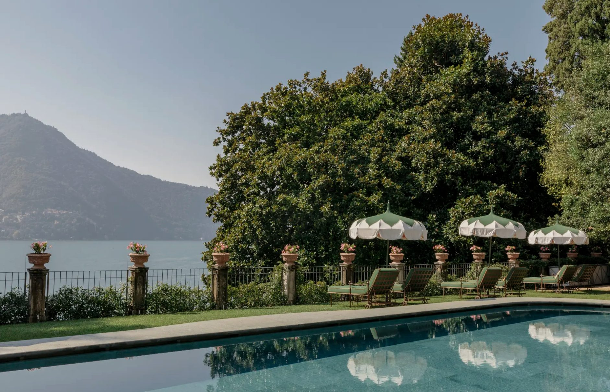

An 18th-century villa turned 24-room showpiece — a villa you never want to leave, and a place I send clients without hesitation.
No hotel appears across my site more often than Passalacqua. It's #05 in The Fifteen — "a villa you never want to leave." It's #04 in my hotel tennis ranking, for a single clay court perched above Lake Como, framed by cypress and the Alps. And it headlines my featured Italy page: an 18th-century villa turned 24-room showpiece, the most celebrated new hotel in Europe, and a place I send clients without hesitation.
Recently named the world's best hotel, it's Lake Como at its most exclusive — a villa run like a private residence, with only a handful of suites and staff who remember your name. In my Lake Como proposal, it's simply "The Pinnacle."
It holds Three Michelin Keys, and it's the property I reserve for the trips that genuinely warrant it: a honeymoon, an anniversary, the once-in-a-lifetime booking. Worth every euro if the moment calls for it.

A villa run like a private home. 24 rooms, staff who remember your name, and the feeling of being a guest at an 18th-century estate rather than a hotel.
The sunken clay court. Perched above Lake Como in the terraced gardens, framed by cypress and the Alps — #04 on my tennis list. Play, then swim in the greenhouse pool.
The terraced gardens. Falling from the villa to the water — the setting that made it the most celebrated new hotel in Europe.
The recognition is real. Recently named the world's best hotel, holding Three Michelin Keys — and my clients' reports match the trophies.
It's small and books far ahead. Only a handful of suites — the sooner we hold dates, the better. This is the single hardest confirmation on the lake.
The Junior Suite Al Lago is the one. It opens right toward the water — the room I show in my Lake Como proposal for milestone trips.
Save it for the moment. If the trip doesn't warrant the pinnacle, Il Sereno and the EDITION are the smart ways into the lake — my proposal compares all four side by side.
A villa you never want to leave. Book it for a milestone — worth every euro if the moment calls for it.
Rates through me are identical to booking direct — the perks are not. As a Fora advisor, my clients receive a space-available upgrade, daily breakfast, and a hotel credit — plus my direct line to the team on property before and during your stay.
Check Availability